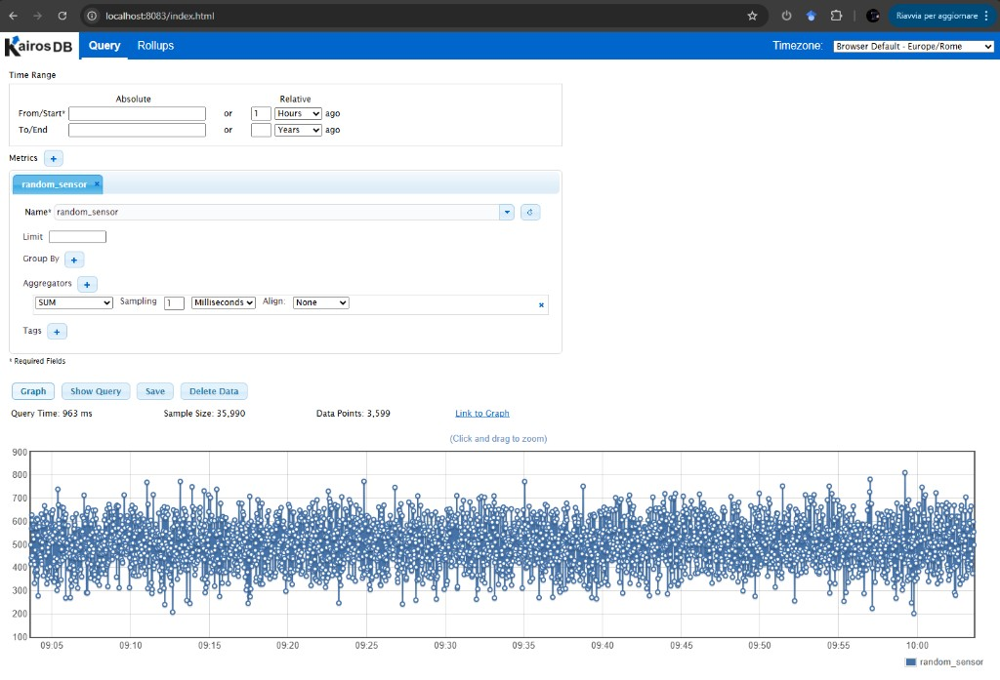

Local Development (K3d)
Set up a complete ExaMon stack on your laptop or desktop using K3d.
Prerequisites
Ensure you have installed all prerequisites: Docker, K3d, kubectl, and Helm.
Hardware: 4 CPU cores and 8 GB RAM recommended.
Automated Setup
The fastest way to get started:
./scripts/k8s-local-setup.sh
This script will:
- Create a K3d cluster with a local image registry
- Add the registry hostname to
/etc/hosts(if not already present) - Build and push all container images
- Install cert-manager (required by K8ssandra)
- Install the K8ssandra operator (separate Helm release, must be ready before ExaMon)
- Deploy the ExaMon chart (Grafana, Cassandra CR, and all ExaMon services)
Manual Setup
Step 1: Create the K3d Cluster
k3d cluster create --config deploy/k3d/local-cluster.yaml
This creates a cluster with:
- 1 server node (control plane)
- 2 agent nodes (workers)
- A local container registry at
examon-registry:5111 - Port mappings for HTTP (8880) and MQTT (1883)
Verify:
kubectl get nodes
Step 2: Register the K3d Registry Hostname
K3d creates a local container registry as a Docker container named
examon-registry. K3d nodes can reach it by that name via Docker networking,
but your host machine cannot resolve it without an /etc/hosts entry.
This entry is required so that docker push can reach the registry, and so
the image repository names match what containerd expects inside the cluster:
# Check if the entry already exists
grep examon-registry /etc/hosts
# If not present, add it
echo "127.0.0.1 examon-registry" | sudo tee -a /etc/hosts
Note
The automated setup script (k8s-local-setup.sh) performs this step
automatically. You only need to do this once per machine; the entry
persists across cluster recreations.
Step 3: Build and Push Images
./scripts/build-and-push-images.sh examon-registry:5111
Step 4: Install cert-manager
cert-manager is required by the K8ssandra operator (its cass-operator webhooks depend on it for TLS certificate management):
helm repo add jetstack https://charts.jetstack.io
helm repo update
helm install cert-manager jetstack/cert-manager \
-n cert-manager --create-namespace \
--set crds.enabled=true --wait --timeout 3m
Step 5: Install K8ssandra Operator
The K8ssandra operator must be installed as a separate Helm release before
the ExaMon chart. The operator's validating webhook needs to be fully running
before Helm can create the K8ssandraCluster custom resource.
helm repo add k8ssandra https://helm.k8ssandra.io/stable
helm repo add grafana https://grafana.github.io/helm-charts
helm repo update
kubectl create namespace examon 2>/dev/null || true
helm install k8ssandra-operator k8ssandra/k8ssandra-operator \
-n examon --wait --timeout 5m
The --wait flag ensures the operator pods and webhook endpoint are ready
before the command returns.
Step 6: Deploy ExaMon
Update Helm dependencies (pulls Grafana chart and packages local subcharts):
cd deploy/helm/examon
helm dependency update
cd ../../..
helm install examon ./deploy/helm/examon \
-f ./deploy/helm/examon/values-local.yaml \
-n examon --wait --timeout 10m
Important
After editing any subchart template (e.g. files under
deploy/helm/examon/subcharts/), you must run helm dependency update
in deploy/helm/examon/ before upgrading. Without this step, Helm continues
to use the previously packaged subchart .tgz and your template changes will
not take effect.
Step 7: Configure Cassandra Authentication
K8ssandra creates Cassandra with authentication enabled by default. After the initial deployment, a superuser secret is automatically generated.
Both KairosDB and examon-server read these credentials automatically
from the K8ssandra secret via secretKeyRef environment variables. No
manual --set flags or second helm upgrade is needed: the pods pick up
credentials on startup once the secret exists.
examon-server uses env var overrides (CASSANDRA_USER, CASSANDRA_PASSWORD)
that take priority over the server.conf ConfigMap values. This is configured
via the cassandraAuth.secretName setting in values:
examon-server:
config:
cassandraAuth:
secretName: "examon-cassandra-superuser" # K8ssandra auto-generated
Bootstrap restarts
On a fresh install, examon-server and kairosdb may restart a few
times while Cassandra initializes and creates the superuser secret.
This is expected: Kubernetes restarts them automatically and they
connect once Cassandra is ready.
Step 8: Verify
kubectl get pods -n examon -o wide
All pods should reach Running / Ready status. Key things to confirm:
- examon-cassandra-dc1-default-sts-0:
2/2 Running(cassandra + server-system-logger) - examon-kairosdb:
1/1 Running(connected to Cassandra) - examon-mosquitto-0:
1/1 Running - examon-examon-server:
1/1 Running(Serving on http://0.0.0.0:5000) - examon-random-pub:
1/1 Running(publishing test data) - examon-mqtt2kairosdb:
1/1 Running(bridging MQTT to KairosDB)
Step 9: Verify the Data Pipeline
Once all pods are running, verify the full data pipeline
(random_pub → MQTT → mqtt2kairosdb → KairosDB → Cassandra) is working.
Check MQTT messages are flowing from random_pub:
mosquitto_sub -h localhost -p 1883 -t '#' -v
You should see sensor readings arriving every few seconds.
Query KairosDB to confirm data is reaching Cassandra. Port-forward to the KairosDB web UI:
kubectl port-forward svc/examon-kairosdb 8083:8083 -n examon
Open http://localhost:8083, select the random_sensor
metric, set the time range to the last 1 hour, and click Graph. You
should see data points like this:

If the graph shows data, the entire pipeline is working end-to-end:
random_pub is publishing synthetic sensor data over MQTT, mqtt2kairosdb
is consuming it and writing to KairosDB, and KairosDB is persisting it in
Cassandra.
Verify via Grafana (auto-provisioned). Unlike the v0.4.0 docker-compose stack, no manual datasource or dashboard setup is required:
- Open http://localhost:3000 and log in as
adminwith the password set via--set grafana.adminPassword=...(default:adminforvalues-local.yaml). - Under Connections → Data sources, the
kairosdbdata source (typearpnetworking-kairosdb-datasource,uid: examon-kairosdb) is already configured. Clicking Test returns "Data source is working". - Under Dashboards, open Examon Test - Random Sensor. It is
loaded automatically by the Grafana dashboard sidecar from a
chart-bundled ConfigMap labeled
grafana_dashboard=1. The dashboard should render live data fromrandom_pub.
If the dashboard is missing, give the sidecar ~30s to pick it up after the initial install, then check:
kubectl get configmap -n examon -l grafana_dashboard=1
kubectl logs -l app.kubernetes.io/name=grafana -c grafana-sc-dashboard -n examon
Accessing Services
All user-facing services are exposed directly on the host via the K3d load
balancer and NodePort services. No kubectl port-forward or Kubernetes
knowledge required. External clients (e.g. examon-client on user laptops,
admins accessing Grafana) connect to these addresses just like with Docker
Compose:
| Service | Address | Protocol | Users |
|---|---|---|---|
| MQTT broker | <host>:1883 |
MQTT | examon-client, publishers, subscribers |
| Grafana | <host>:3000 |
HTTP | Admins, dashboard users |
| ExaMon API | <host>:5000 |
HTTP | examon-client, data consumers |
Replace <host> with localhost for local access or the VM's IP/hostname
for remote access.
For internal/debugging services (not user-facing), use kubectl port-forward:
# KairosDB web UI (debugging only)
kubectl port-forward svc/examon-kairosdb 8083:8083 -n examon
Important Configuration Details
Cassandra Service Name
K8ssandra creates Cassandra services with a naming pattern based on the K8ssandraCluster resource name and datacenter name. With the default ExaMon chart configuration, the CQL service is:
examon-cassandra-dc1-service (port 9042)
Both KairosDB and examon-server must reference this exact service name. The umbrella chart defaults already set this correctly. If you rename the Cassandra cluster, update the service references accordingly.
Grafana Service Port
The Grafana Helm chart exposes port 80 on the Kubernetes service (which
proxies to the Grafana container's port 3000). When configuring
examon-server.config.authUrl, use port 80 (or omit the port entirely):
examon-server:
config:
authUrl: "http://examon-grafana/api/datasources/id/kairosdb"
KairosDB Configuration
KairosDB 1.3.0 loads two configuration files:
kairosdb.properties: legacy Java properties formatkairosdb.conf: HOCON format (takes precedence)
The config-kairos.sh entrypoint script patches both files at startup using
environment variables (CASSANDRA_HOST_LIST, CASSANDRA_USER,
CASSANDRA_PASSWORD, KAIROS_JETTY_PORT). The kairosdb Docker image also
includes JVM --add-opens flags required for KairosDB's Guice/cglib dependency
to work on Java 17+.
Python Services Configuration (ExamonApp Framework)
random_pub, mqtt2kairosdb, and examon-server are Python applications
built on the ExamonApp framework from the examon-common library. They
expect their configuration in .conf files (INI format) mounted in the
working directory:
random_pub.conf: mounted from ConfigMap via Helmmqtt2kairosdb.conf: mounted from ConfigMap via Helmserver.conf: mounted from ConfigMap via Helm
These are generated from the Helm values.yaml settings by each subchart's
configmap.yaml template.
Local Development Workflow
The inner-loop development cycle on K3d follows a simple pattern: edit code, rebuild the image, redeploy to the cluster. This section covers the recommended workflow and its alternatives.
Understanding Image Pull Behavior
K3d nodes run containerd, which maintains its own image cache independently
from your host Docker daemon. When a pod starts, containerd decides whether
to pull the image based on the Kubernetes imagePullPolicy:
| Policy | Behavior | Best for |
|---|---|---|
Always |
Re-pulls from registry on every pod start | Local development (always gets the latest build) |
IfNotPresent |
Uses cached image if tag exists locally | Staging, production (stable tags) |
Never |
Only uses pre-imported images | Air-gapped or k3d image import workflows |
values-local.yaml sets pullPolicy: Always for all custom ExaMon images.
This means the standard build-push-restart cycle works reliably with the
:latest tag, with no stale cache surprises.
Scenario 1: Application Code Change
When you modify application code (Python, config files, etc.) for a single service:
# 1. Rebuild the image
docker build -t examon-registry:5111/examon/examon-server:latest \
-f deploy/docker/examon-server/Dockerfile .
# 2. Push to the local registry
docker push examon-registry:5111/examon/examon-server:latest
# 3. Restart the deployment (containerd re-pulls from registry)
kubectl rollout restart deployment/examon-examon-server -n examon
# 4. Verify
kubectl logs -f deployment/examon-examon-server -n examon
This takes roughly 10-30 seconds depending on the image size.
Replace examon-server with the service you are working on. The mapping is:
| Service | Dockerfile | Deployment name |
|---|---|---|
| examon-server | deploy/docker/examon-server/Dockerfile |
examon-examon-server |
| kairosdb | deploy/docker/kairosdb/Dockerfile |
examon-kairosdb |
| mqtt2kairosdb | deploy/docker/mqtt2kairosdb/Dockerfile |
examon-mqtt2kairosdb |
| random-pub | deploy/docker/random-pub/Dockerfile |
examon-random-pub |
| mosquitto | deploy/docker/mosquitto/Dockerfile |
examon-mosquitto (StatefulSet) |
For mosquitto (a StatefulSet), use:
kubectl rollout restart statefulset/examon-mosquitto -n examon
Scenario 2: Helm Template Change
When you modify files under deploy/helm/examon/subcharts/ (e.g., adding an
env var to a deployment template, changing a ConfigMap):
# 1. Rebuild the Helm dependency archives
cd deploy/helm/examon && helm dependency update && cd ../../..
# 2. Upgrade the release (Helm detects the template change and recreates pods)
helm upgrade examon ./deploy/helm/examon \
-f ./deploy/helm/examon/values-local.yaml \
-n examon --timeout 10m
Warning
Without helm dependency update, Helm uses stale .tgz archives in
charts/ and your template changes will have no effect. This is the
most common "my changes aren't working" mistake.
Scenario 3: Helm Values Change
When you only change values-local.yaml (e.g., resource limits, config
parameters, replica count):
helm upgrade examon ./deploy/helm/examon \
-f ./deploy/helm/examon/values-local.yaml \
-n examon --timeout 10m
No image rebuild or dependency update is needed.
Quick Reference
| What changed | Build image? | helm dep update? |
Deploy command |
|---|---|---|---|
| Application code | Yes | No | kubectl rollout restart |
Helm template (subcharts/) |
No | Yes | helm upgrade |
| Helm values | No | No | helm upgrade |
| Both code + template | Yes | Yes | helm upgrade (picks up new image too) |
Alternative: k3d image import (Without pullPolicy: Always)
If you are working in an environment where pullPolicy is set to
IfNotPresent (e.g., debugging in staging), the registry push alone will
not update the containerd cache. Use k3d image import to bypass the
registry and load the image directly into all K3d nodes:
docker build -t examon-registry:5111/examon/examon-server:latest \
-f deploy/docker/examon-server/Dockerfile .
docker push examon-registry:5111/examon/examon-server:latest
# Force-load into K3d containerd cache
k3d image import examon-registry:5111/examon/examon-server:latest \
-c examon-local
# Restart to pick up the imported image
kubectl rollout restart deployment/examon-examon-server -n examon
Alternative: Unique Tags (CI/CD Pattern)
For reproducible, traceable builds (recommended for CI pipelines and shared staging environments), use the git commit SHA as the image tag:
TAG=$(git rev-parse --short HEAD)
docker build -t examon-registry:5111/examon/examon-server:${TAG} \
-f deploy/docker/examon-server/Dockerfile .
docker push examon-registry:5111/examon/examon-server:${TAG}
helm upgrade examon ./deploy/helm/examon \
-f ./deploy/helm/examon/values-local.yaml \
--set examon-server.image.tag="${TAG}" \
-n examon
This eliminates caching issues entirely because each build gets a unique tag that containerd has never seen before.
Optional: Automated Workflows with Tilt or Skaffold
For teams that want a fully automated file-watch -> rebuild -> redeploy loop (similar to frontend hot-reload), tools like Tilt and Skaffold integrate well with K3d and Helm charts:
- Tilt provides a web dashboard, live-updates (sync files into running containers without a full rebuild), and multi-service orchestration.
- Skaffold is a CLI-first tool that handles the build-push-deploy pipeline, supports file syncing, and integrates with CI/CD.
Both tools work with ExaMon's Helm chart structure out of the box. They are optional power-ups; the manual workflow above is sufficient for most development tasks.
Teardown
k3d cluster delete examon-local